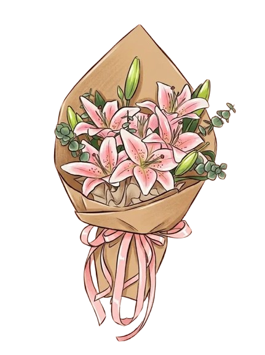

Selamat tanggal 3yang ke-7, sayang.
Hai sayangku,
Maaf ya buat kali ini ucapannya lebih sederhana dibanding bulan bulan yang kemarin sayang.
Sayangku boleh geser halamannya ataupun di ketuk ya.
Hai odi kesayangku, cintaku, cantikku, manisku, pujaan hatiku, anak kecilku, duniaku, semestaku.
7 bulan buat aku bukan waktu yang sebentar, selama 7 bulan ini juga kita ga selalu baik baik aja. Ada hari menyenangkan, ada juga hari yang mungkin lebih berat dari biasanya. Kita pernah beda pendapat, salah paham, dan mungkin ada saatnya kamu cape sama aku. Banyak hal yang udah kita lewatin bareng bareng, banyak masalah yang udah kita selesaiin bareng bareng. Aku juga sadar, selama kita bareng aku sering buat salah, beberapa kali pernah buat kamu kecewa ataupun buat kamu sakit hati tanpa aku sadari. Walaupun ngelewatin semuanya ga mudah, aku bersyukur kita masih bareng sampai sekarang. Masih mau saling mengerti, masih mau saling memaafkan, masih mau saling memperbaiki segala hal yang kurang dari kita dan masih mau jadi lebih baik kedepannya.
Aku mungkin ngga selalu bisa nunjukin rasa sayang dan cinta aku dengan cara yang kamu mau. Kadang aku lebih sering bercanda atau lebih serius di kondisi yang ga seharusnya dan itu buat kamu bete. Kadang juga kamu ngerasa aku nyebelin ataupun kurang peka sama hal hal kecil yang sebenarnya penting buat kamu. Tapi bukan berarti aku ngga peduli sama kamu sayang, aku peduli dan aku selalu mengusahakan apa yang aku bisa, aku selalu belajar buat tunjukin rasa sayang aku dengan cara yang bisa kamu rasain juga.
Mungkin aku masih sering gagal dalam hal itu. Masih ada banyak hal yang harus aku pelajari tentang kamu, tentang apa yang kamu suka, apa yang kamu ga suka, hal apa yang bisa bikin kamu senang, hal apa yang ternyata bisa bikin kamu kepikiran, bahkan hal hal kecil yang mungkin menurut aku biasa aja tapi buat kamu itu berarti. Aku sekarang sadar kalau mengenal seseorang bukan tentang lama bersama ataupun cuma tau tentang kesukaan dan kebiasaan, tapi juga tentang mau memahami perasaan walaupun kadang belum tentu langsung mengerti.
Aku berharap kamu ga pernah ngerasa sendirian dalam hubungan ini. Aku mungkin belum selalu bisa memberikan apa yang kamu butuhkan dengan cara yang tepat, tapi aku mau kamu tau kalau aku selalu punya niat untuk jagain kamu dan jagain hubungan ini. Aku mungkin masih banyak kurangnya, tapi rasa sayang aku ke kamu bukan sesuatu yang aku anggap main main.
Aku mau berterima kasih ke kamu, bukan cuma karena kamu masih sama aku sampai sekarang tapi karena kamu udah kasih aku banyak hal yang mungkin ga selalu bisa aku bales dengan cara yang sama. terima kasih karena udah mau mengenal aku, udah mau menerima sisi aku yang kadang bikin kamu geleng geleng kepala, udah mau dengerin cerita aku, dan selalu ada buat aku bahkan ketika aku lagi ga jadi versi terbaik dari diri aku.
Terima kasih juga karena kamu masih mau kasih aku kesempatan buat belajar. Aku tau ada beberapa hal yang pernah aku lakuin yang sampai sekarang masih kamu ingat dan menjadi luka buat kamu, aku ga bisa maksa kamu buat hapus gitu aja. Tapi aku berusaha supaya kedepannya aku ga ngulang kesalahan yang sama.
Aku sayang banget sama kamu, sayang. Mungkin aku ga selalu bisa menyampaikannya dengan cara yang bener, tapi aku harap selama ini kamu bisa ngerasain kalau aku bener bener sayang sama kamu.
Semoga kita bisa terus jalanin semuanya pelan pelan. Ga harus selalu sempurna, ga selalu harus baik baik aja, yang penting kita sama sama memperbaiki kalau ada yang salah dan sama sama mau menjaga hubungan kita.
Selamat tanggal 3 yang ke-7 sekali lagi sayang. Aku sayang banget sama kamu. I love u, more than i can properly explain, more than i sometimes know how to show.
dari,
Ebie